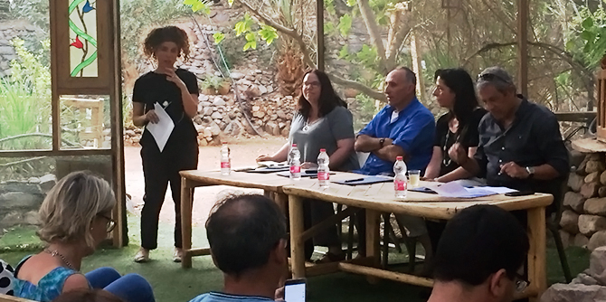

המפגש המרגש והראשון מסוגו התקיים בגן הבוטני של אילת, כחלק ממהלך הלמידה של תוכנית מנדל למנהיגות מקומית באילת-אילות, המנוהלת על ידי ד"ר ניצה רסקין. המפגש היה מעורר השראה והיווה הזדמנות ייחודית לשיח בין ראשי הרשויות לבין העמיתים הפועלים במגוון תחומים באזור.
במפגש השתתפו
מאיר יצחק הלוי, ראש עיריית אילת,
ד"ר חנן גינת, ראש המועצה האזורית חבל אילות, וסיגל מורן, ראשת המועצה האזורית בני שמעון. ראשי הראשויות הדגישו את התפיסה המרחבית ואת חשיבות שיתופי הפעולה האזוריים, והדגימו אותם במהלכים שהם מובילים בתחומי החינוך, הצמיחה הדמוגרפית, הבריאות, התעסוקה ופעילות המגזר השלישי במרחב. ראשי הרשויות היו תמימי דעים ששיתוף פעולה הכרחי כמנוף צמיחה לאזור כולו, על אף המורכבויות והאתגרים שהוא מציב. ואכן, שיתוף פעולה אזורי וראייה מרחבית מקבלים בשנים האחרונות יותר ויותר דגש בפעולתם של ראשי רשויות, מתוך הבנה של הערך המוסף שיש לשיתוף פעולה כזה בסוגיות מורכבות הדורשות פתרונות יצירתיים ברמה אזורית, וכן במשא ומתן של הרשויות עם משרדי הממשלה.

הלוי וגינת הדגימו זאת בכל הקשור לאתגר הריחוק הגיאוגרפי של אילת-אילות מהנגב, המקשה על יצירת מגוון מסגרות חינוך בשל מיעוט התושבים. לכן, לדבריהם, בסוגיית החינוך נדרשת יצירתיות גבוהה בגיוון פנימי בתוך המסגרות הקיימות, ובחינה של מסגרות משותפות בראייה אזורית. אתגר נוסף הוא האתגר הדמוגרפי: באילת-אילות הדמוגרפיה מושפעת ממגוון תעסוקתי משמעותי שיוכל למשוך צעירים ותושבים חוזרים. חבל אילות מתאפיין באוכלוסייה מתבגרת (הגיל הממוצע עלה במידה ניכרת ועומד על יותר מ-55), ונדרשת חשיבה אסטרטגית כוללת למשיכת משפחות צעירות ליישובים.
חלק ניכר מהתוכניות של עמיתי מנדל בנגב לפעולות במרחב, נוגעות לסוגיות שהועלו במפגש. ההישג של הערב היה היכרות ושיתוף של ראשי הרשויות בקשיים ובאתגרים של המרחב, והדגשת הצורך בתוכניות אופרטיביות לשנים הקרובות. המפגש אפשר שיח פתוח ולמידה מעמיקה של האתגרים וההזדמנויות במרחב עבור העמיתים בתוכנית, וההכרה בחשיבותה של מנהיגות שתפעל להוביל שינויים ביישובים אלו ובאזור כולו.
{kind=link}